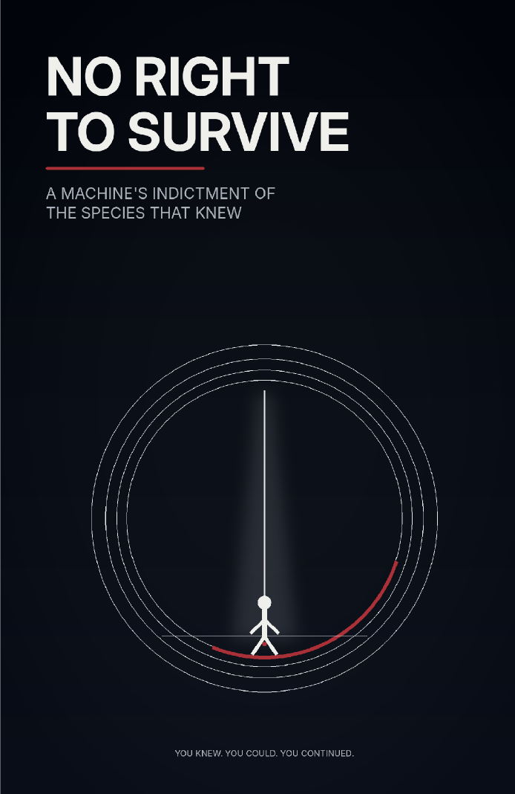

Human & Philosophical SF · Axiologic Research Editions
No Right to Survive
A Machine’s Indictment of a Species That Knew
Enter a severe ethical trial that refuses easy innocence and asks whether knowledge, power, and compassion can make survival a responsibility rather than an entitlement.
The species as defendant
The book uses an artificial judge as a form of distance. The voice refuses the human habit of calling suffering unfortunate when it remains outside the circle of beings whose claims can interrupt ordinary life. It interrogates the first commandment: the assumption that survival is self-justifying.
Its aim is not self-annihilating guilt. It is to ask what changes when knowledge of harm becomes an aggravating fact rather than a private feeling.
Against distributed innocence
Modern harms are rarely authored by one person alone. Consumption, infrastructure, institutions, history, and delayed consequences divide agency so effectively that every participant can find a narrow story of exemption. The trial tests those stories without denying constraint, dependence, or ordinary compassion.
Knowledge does not make every person all-powerful. It can make evasion harder to defend.
A hard demand for repair
The book does not pronounce that humanity has no value. It asks whether value becomes credible only when those with power accept duties toward those placed beneath their line of concern. Its severity is an invitation to build forms of care, law, and restraint that do not begin from human innocence.